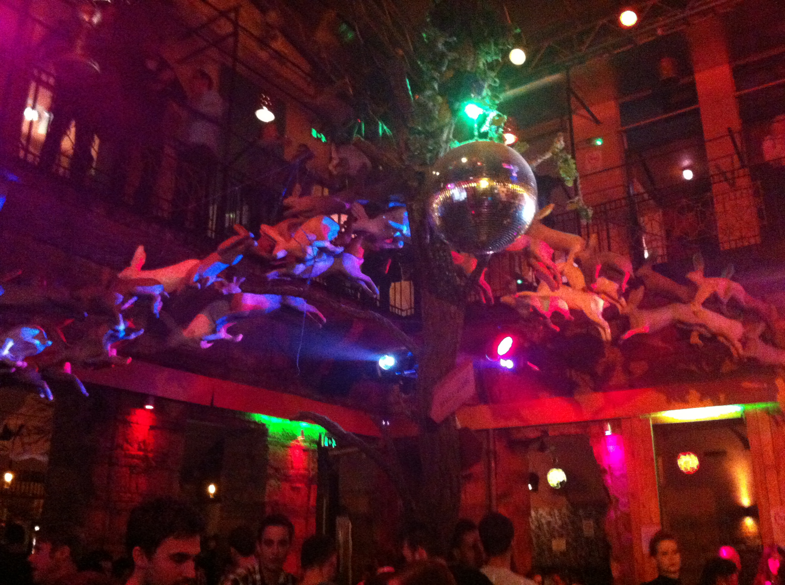
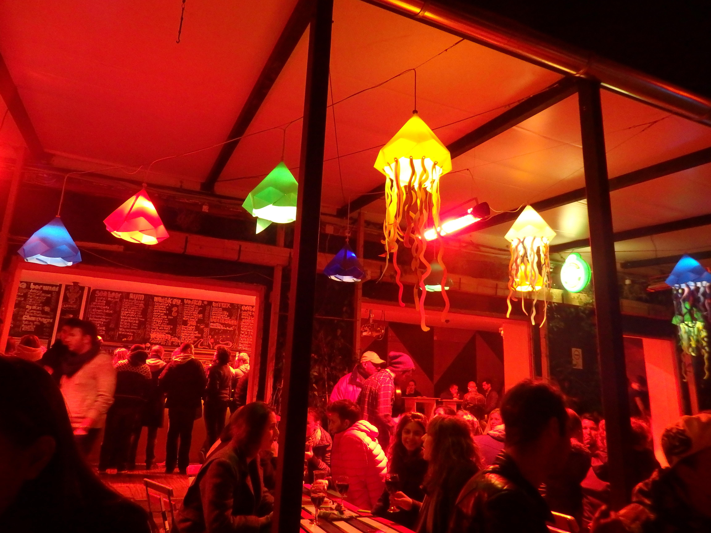

Listen up guys, Budapest was f***ing cold but I f***ing loved it. I really like grimy places, and I feel Budapest is a nice mix of that griminess with the depth of its history and beautiful architecture. Maybe it was the grumpy and border line miserable Eastern European vibes in November that got to me..
Ruin Pubs/Bars
I like grimy, I like drinking, and I like janky. And that pretty much sums up Budapest for ya. Ruin pubs are old, abandoned buildings in the city that transform into the heart of night life and all around amazing bars. With the Hungarian Forinth being ridiculously cheap compared to the US Dollar, the sky truly is the limit, when it comes to reaching your happy drunk peak. So here they are, noche paradiso, aka ruin pubs
Szimpla Kert is a bit hidden, I definitely walked past it before actually going in. But nonetheless, the moment you walk in, it's like walking into an insane junk yard paradise--old cars, plants everywhere, hookah, and a lot of comfy benches and pretty lights...

Instant was the first ruin pub I went to, literally a few hours into landing in Hungary. And it was quite the shit show--instantly fucked up! It's easy to get lost in there, since there's a good 20 or so rooms, the most coolest being the one pictured. More dj sets pop up later.

Kuplung is most known for its iconic floating jellyfish decor. It's mostly outdoors so it's slightly brutal sitting out but the heating is pretty good--and you'll be warmed up quick with cheap ($1) beers! Great to bring your smoker friend to!